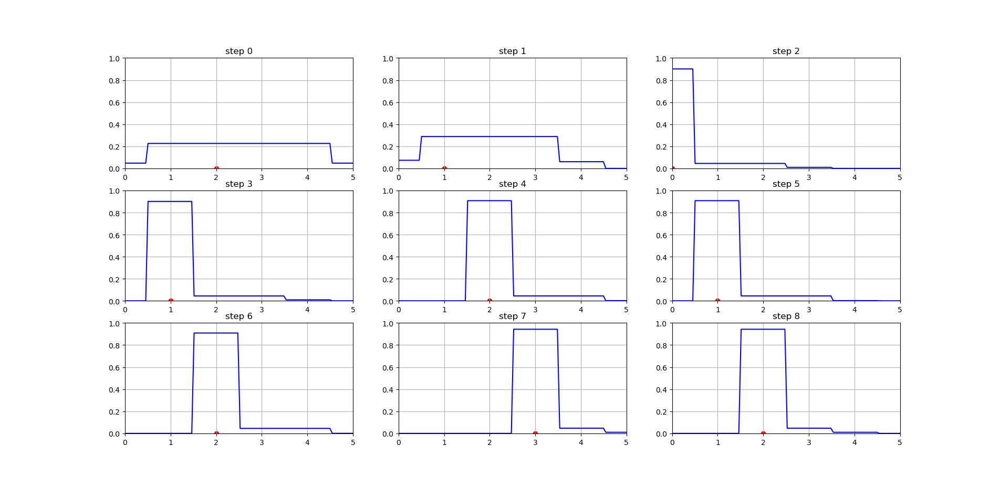

Markov Lokalisation#
Hintergrund#
Aufgabe#
Ziel der Aufgabe ist die erfolgreiche Implementation der Markov Lokalisation.
Zur Aufgabe:
Gegeben ist ein 1D Array der länge len, auf welchem sich ein Agent nach rechts, links oder gar nicht bewegen kann. Es kann nach jedem Schritt eine Messung durchgeführt werden.
Folgendes sind die Wahrscheinlichkeiten für die Messwerte:
Folgendes sind die erlaubten Bewegungsmuster des Agents:
wenn er sich nicht am rand des Arrays befindet, kann er sich in jede Richtung
ubewegen.wenn er sich am linken Rand befindet und nach links geht, verändert er die Position nicht
wenn er sich am rechten Rand befindet und nach rechts geht, verändert er die Position nicht
Dieser Mechanismus ist duch folgende Wahrscheinlichkeitsverteilungen gegeben:
Für alle verbleibenden Konfigurationen von $$x_t, u_t, x_{t-1}$$ ist die Wahrscheinlichkeit null.
Implementieren Sie die Klasse Agent, die die Methoden p_x, p_z, predict und update besitzt. Die update Methode soll die geglaubte State Wahrscheinlichkeitsverteilen $b(x_t) (self.bel$) updaten. self.bel wird beim iterativen Aufruf von Agent verwendet um die Ergebnisse darzustellen.
import numpy as np
import random
import matplotlib.pyplot as plt
from scipy.interpolate import interp1d
Folgendes ist das Environemnt, welches den Schritt entgegen nimmt und Sensordaten zurück gibt. Sie dürfen nicht auf die _pos Eigenschaft zugreifen.
Show code cell source
class Environment:
def __init__(self, size):
self.arr = np.zeros(size)
self.size = size
self._pos = random.randint(0, size - 1)
def step(self, u):
if self._pos == 0 and u == -1 or self._pos == self.size - 1 and u == 1:
return
self._pos += u
def sense(self):
is_wall = self._pos == 0 or self._pos == self.size - 1
if is_wall:
return 'wall'
else:
return 'way'
class Agent:
def __init__(self, env):
self.env = env
self.bel = [1 / env.size for _ in range(env.size)]
self.u = [1, 0, -1]
self.x = list(range(env.size))
self.z = ['wall', 'way']
self.last = env.size - 1
def p_z(self, z, x):
"""
properbility distribution of sensor data z for given position x
:param z: str (Sensor data 'wall' or 'way')
:param x: int (Position)
:return: int (propability [0,1])
"""
# your code here
def p_x(self, x_next, x, u) -> int:
"""
properbility distribution of x_t given control-action u_t and last position x_t-1
:param x_next: int (next position)
:param x: int (last position)
:param u: int (control-action 0,1 or -1)
:return: int (propability [0,1])
"""
# your code here
pass
def predict(self, x_next, u) -> int:
"""
Predicts the next belief state given the current belief state and the action
:param x_next: the next state
:param u: the action
"""
# your code here
pass
def update(self, z, predicted_bel):
"""
Updates the belief state given the current belief state and the observation
:param z: the observation
:param predicted_bel: the predicted belief state
"""
# your code here
pass
def __iter__(self):
self.steps = [0] + [random.choice(self.u)
for _ in range(self.num_steps - 1)]
self.i = 0
return self
def __next__(self):
if self.i < len(self.steps):
u = self.steps[self.i]
self.env.step(u)
predicted_bel = [self.predict(x, u) for x in self.x]
z = self.env.sense()
self.update(z, predicted_bel)
self.i += 1
return self.bel, self.env._pos
raise StopIteration
def __call__(self, num_steps=9):
self.num_steps = num_steps
return self
Show code cell source
class AgentVizualizer:
def __init__(self, agent, num_steps=9):
self.agent = agent
self.num_steps = num_steps
self.size = self.agent.env.size - 1
def interpol_bel(self, bel):
x = np.linspace(0, self.size, len(bel))
y = bel
f = interp1d(x, y, kind='nearest', fill_value='extrapolate')
x_new = np.linspace(0, self.size, 100)
y_new = f(x_new)
return x_new, y_new
def __call__(self, ):
fig, axs = plt.subplots(self.num_steps // 3, 3, figsize=(10, 10))
axs_flat = axs.flatten()
for i, (bel, pos) in enumerate(self.agent(self.num_steps)):
ax = axs_flat[i]
x, y = self.interpol_bel(bel)
ax.scatter(pos, 0, color='red')
ax.plot(x, y, color='blue')
ax.set_ylim(0, 1)
ax.set_xlim(0, len(bel) - 1)
ax.set_title(f'step {i}')
ax.grid()
plt.show()
Show code cell source
def main():
env = Environment(6)
markov = Agent(env)
AgentVizualizer(markov, num_steps=9)()
if __name__ == '__main__':
main()
Folgendes ist ein Beispielergebnis:
